مشروع تخرج: Thenar
منظومة الأمان الذكية لمقبض الخزنة والتحقق البيومتري المزدوج
"It knows how you open." — التحقق ثنائي البوابات: بصمة الإصبع + ديناميكية القبضة السلوكية
الكتاب الشامل: المعمارية الهندسية، الـ Backend، الذكاء الاصطناعي، وأسئلة المناقشة
تم الفحص والتحقق الكامل من كافة المسارات البرمجية والحسابات الرياضية في نوفمبر 2026
فهرس الموضوعات ومسار المذاكرة الشامل
تم تقسيم هذا الدليل إلى أقسام هندسية متسلسلة تأخذك من فلسفة المشكلة وصولاً إلى معمارية الـ Backend الحقيقية، والخوارزميات الرياضية، وانتهاءً ببنك أسئلة المناقشة الشامل.
الأقسام والفصول الرئيسية:
- الفصل الأول: المشكلة الهندسية وثغرات البصمة العادية وفلسفة التحقق المزدوج (Dual-Gate).
- الفصل الثاني: مصفوفة الصدق والأمانة العلمية: ما تم بناؤه حقيقياً وما تم محاكاته برمجياً.
- الفصل الثالث: المعمارية الهندسية ومخطط البوستر الشامل (The Big Picture Poster).
- الفصل الرابع: استعراض الشاشات السبعة وتجربة المالك في الواجهة الأمامية React.
- الفصل الخامس: الرياضيات الحركية: مراحل اللف S1-S4، استخراج الميزات الـ 16، ومسافة ماهالانوبيس.
- الفصل السادس: إدارة الحالة بـ Zustand، العقوبة التصاعدية (Lockout)، والحفظ الدائم.
- الفصل السابع: معمارية الـ Backend المتكاملة، خادم Express، وقاعدة بيانات SQLite WAL.
- الفصل الثامن: دورة حياة الطلبات وبث الإطارات بالوقت الفعلي بـ 100Hz عبر WebSocket.
- الفصل التاسع: تدريب النموذج البيومتري بخوارزمية Ledoit-Wolf وتصدير كود C للمتحكم.
- الفصل العاشر: آلة الحالة لمحاكي العتاد ونظام التبديل الاحتياطي المرن (Graceful Fallback).
- الفصل الحادي عشر: هرم الاختبارات الشاملة (Golden Vectors) وخريطة الفيرموير لـ ESP32.
- الفصل الثاني عشر: بنك أسئلة المناقشة والدفاع: 55 سؤالاً وجواباً نموذجياً للجنة التحكيم!
💡 نصيحة الدكتور في المناقشة: ركز على أن قرار الفتح يُتخذ دائماً على العتاد المدمج (ESP32) بسرعة فائقة واستقلالية تامة (Edge Autonomy) وفق مبدأ Fail-Secure، بينما يتولى خادم الـ Gateway المراقبة والتدقيق وتدريب النماذج الإحصائية.
1. المشكلة الهندسية وفلسفة التحقق ثنائي البوابات (Dual-Gate)
1.1 لماذا تفشل أقفال البصمة التقليدية؟
أقفال الخزن التجارية تعتمد على فحص بصمة الإصبع الثابتة (Static Minutiae Matching). هذا الاعتماد الأحادي يعاني من ثغرات قاتلة:
- قوالب السيليكون والجيلاتين: رفع البصمة الكامنة عن الأسطح الزجاجية وصنع قوالب مرنة تحاكي بصمة المالك.
- الإكراه والتهديد المباشر: إجبار المالك على وضع إصبعه تحت التهديد لفتح الخزنة.
- الاستغلال أثناء النوم أو فقدان الوعي: وضع إصبع المالك وهو نائم على الحساس.
1.2 الحل: التحقق الحركي السلوكي (Behavioral Biometrics)
يقدم Thenar حلاً يعتمد على فحص أسلوبك الحركي الشخصي عبر حارسين متتاليين:
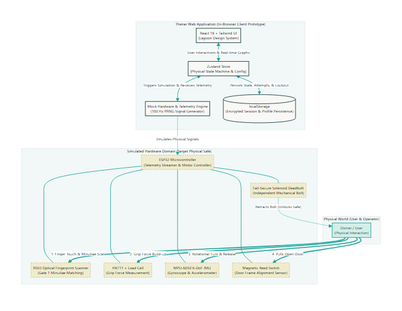
شكل 1: مخطط سياق النظام العام (System Context Diagram)
قاعدة القرار ثنائي البوابات:
البوابة الأولى (Gate 1): مطابقة بصمة الإصبع الثابتة عبر حساس بصري R503.
البوابة الثانية (Gate 2): قياس قوة القبضة (Load Cell + HX711) والسرعة الزاوية والعزم (MPU-6050 IMU) وحساب سكور السلوك $s(x)$. الخزنة تفتح فقط إذا تحقق:
Decision = (Gate 1 == MATCH) AND (s(x) ≥ τ) AND (NOT SensorFault)
1.3 الفصل الميكانيكي المستقل (Mechanically Independent Solenoid Bolt)
المقبض يدور بحرية تامة وهو مفصول ميكانيكياً بنسبة 100% عن لسان القفل الكهربائي (Fail-Secure Solenoid Deadbolt). اللسان مدعوم بنوابض ميكانيكية تبقيه مقفولاً دائماً، ولا يرتد إلا بنبضة كهربائية 12V لمدة 3 ثوانٍ فقط لو صدر قرار ACCEPT.
2. مصفوفة الصدق والأمانة العلمية (Physical vs. Simulated)
يوضح الجدول التالي ما تم إنجازه كبرمجيات حقيقية وما يعمل بالمحاكاة في هذا النموذج الأولي:
| المكون الهندسي |
الحالة في المشروع |
التوصيف التقني الدقيق |
| واجهة المالك (React Web App) |
حقيقي 100% (Production) |
تطبيق ويب متكامل بـ React 18 و TypeScript مع مزامنة لحظية ودعم النمط الاحتياطي. |
| خادم البوابة (Gateway API & WS) |
حقيقي 100% (Production) |
خادم Node.js / Express مع WebSocket وقاعدة بيانات SQLite بنمط WAL Mode. |
| خدمة التدريب البيومتري |
حقيقي 100% (Production) |
خدمة Python FastAPI مع Scikit-learn وخوارزمية Ledoit-Wolf وتصدير كود C. |
| حزمة العقود المشتركة |
حقيقي 100% (Production) |
مخططات Zod ومواصفات OpenAPI 3.0 ومولد كود C للمتحكمات المدمجة. |
| محرك الحسابات والمتجهات |
حقيقي 100% (Production) |
استخراج 16 ميزة حركية ومسافة ماهالانوبيس واختبارات المتجهات الذهبية. |
| محاكي العتاد (Device Sim) |
محاكاة برمجية كاملة |
كود Node.js يحاكي شريحة ESP32 وتدفق الإطارات بـ 100Hz وذاكرة الفلاش. |
| المقبض الفيزيائي والحساسات |
مخطط تصميم هندسي |
مواصفات ربط حساسات HX711 و MPU-6050 و R503 مع نواتي ESP32. |
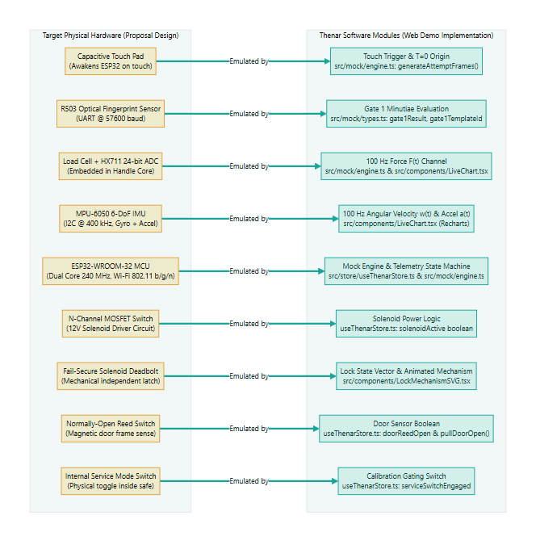
شكل 2: مخطط الربط بين قطع العتاد الفيزيائية والوحدات البرمجية المقابلة في الكود
3. المعمارية الهندسية ومخطط البوستر الشامل
يوضح هذا المخطط الماستر المعمارية الشاملة للنظام، مقسمة إلى أربع طبقات واضحة:
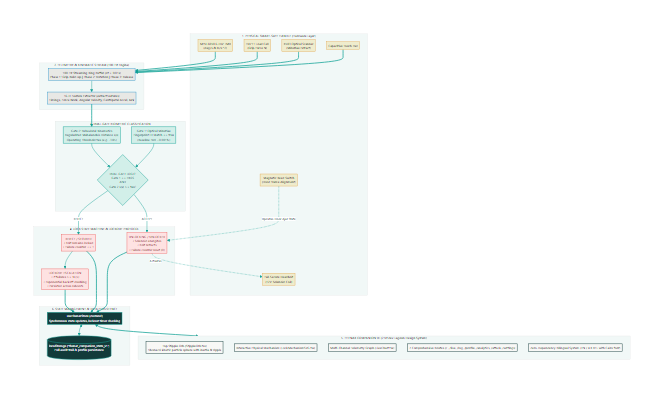
شكل 3: بوستر الماستر الهندسي الشامل لمشروع Thenar
4. استعراض الشاشات وتجربة الاستخدام في الواجهة
يحتوي التطبيق على 7 شاشات مصممة بنظام البطاقات الزجاجية الأنيقة (Lagoon Theme):
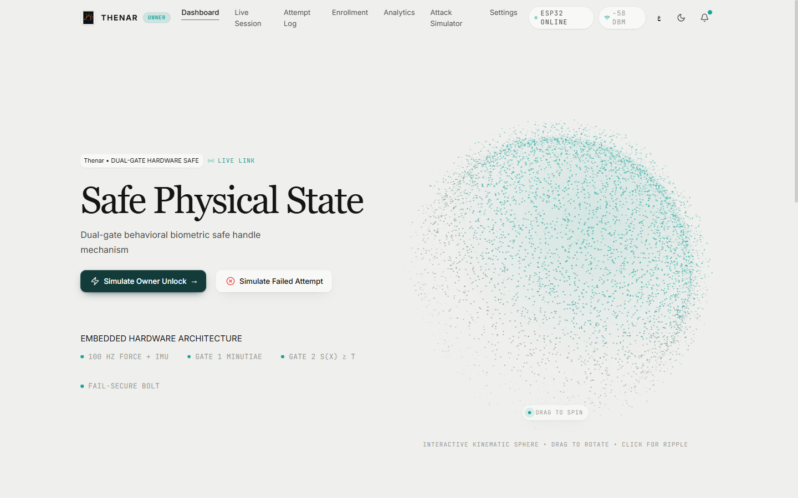
شكل 4: لوحة التحكم الرئيسية (Dashboard) وتظهر القفل الميكانيكي المتحرك وشارة اتصال الـ Gateway
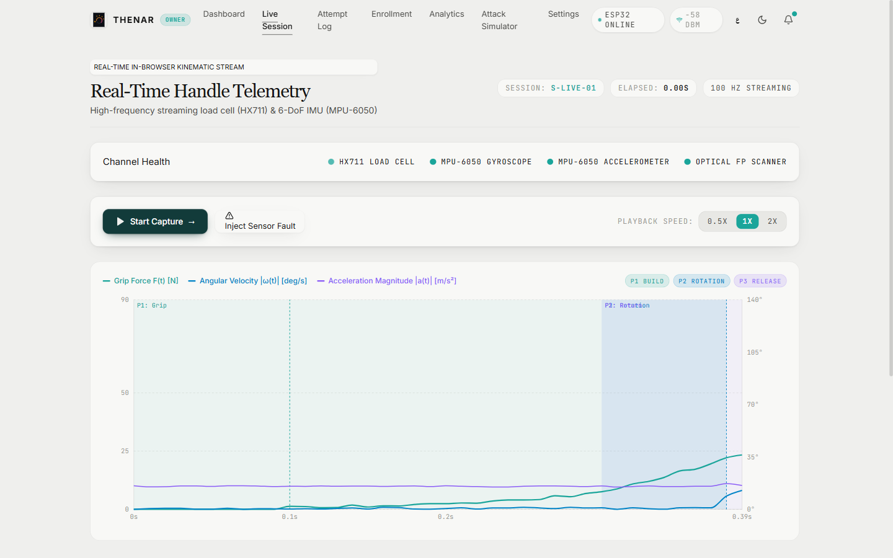
شكل 5: راسم الإشارة المباشر ثلاثي القنوات (Live Session) بـ 100 هرتز المتصل بالـ WebSocket
5. الرياضيات الحركية ومسافة ماهالانوبيس
5.1 المراحل الحركية الأربعة للفت المقبض (S1 - S4)
- S1 (الاقتراب واللمس - 0 إلى 200ms): يلمس الإصبع وسادة البصمة، وقوة القبضة شبه منعدمة.
- S2 (بناء قوة القبضة - 200 إلى 650ms): تضغط عضلات راحة اليد وتتصاعد القوة لتصل لذروتها ($F_{peak} \approx 18.4\text{N}$).
- S3 (عزم اللف والدوران - 650 إلى 1150ms): يلف المعصم المقبض، وترتفع السرعة الزاوية ($\omega_z \approx 82^\circ/\text{s}$).
- S4 (الثبات والارتخاء - 1150 إلى 1500ms): يثبت المقبض بانتظار القرار ثم يعود لوضعه بفعل السوستة.
5.2 مصفوفة مسافة ماهالانوبيس وتحويل السكور
تستخدم مسافة ماهالانوبيس معكوس مصفوفة التغاير ($\Sigma^{-1}$) لتطبيع المقاييس وتصحيح الترابط الإحصائي بين الخصائص الـ 16:
DM2 = (x - μ)T · Σ-1 · (x - μ)
s(x) = - (1 / 2.5) · √( DM2 )
6. إدارة الحالة ونظام الإغلاق الأمني المتصاعد (Lockout)
يحسب النظام عدد المحاولات الفاشلة المتتالية؛ فإذا بلغت 5 محاولات يدخل في وضع العقوبة الزمنية التي تتضاعف أسياً لمنع التخمين المستمر:
Penalty Duration = 30s × 2repeatCount
5 أخطاء: 30 ثانية | تكرار الخطأ: 60 ثانية | التكرار الثالث: 120 ثانية... تحفظ في الذاكرة الدائمة!
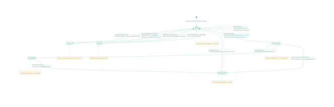
شكل 6: آلة الحالة المنتهية للقفل الإلكتروني (Finite State Machine)
7. معمارية الـ Backend المتكاملة وقاعدة بيانات SQLite WAL
يتكون الـ Backend من خادم Express خفيف وسريع بنمط REST API مع قنوات WebSocket، وقاعدة بيانات SQLite تعمل بنمط الكتابة المسبقة (Write-Ahead Logging):
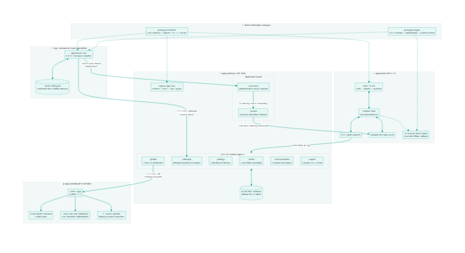
شكل 7: المعمارية الشاملة للـ Backend وقنوات الاتصال والخدمات المصغرة
7.1 جداول قاعدة البيانات الثمانية (Database Schema)
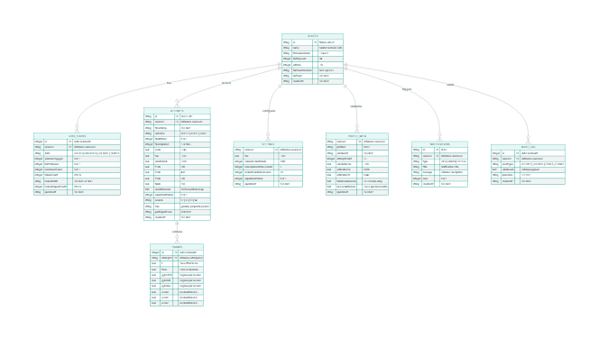
شكل 8: مخطط العلاقات الكينونية (ER Diagram) لقاعدة بيانات SQLite
8. دورة حياة الطلبات والبث المباشر للإشارات الحركية
8.1 دورة حياة تسجيل محاولة جديدة (POST /attempts)
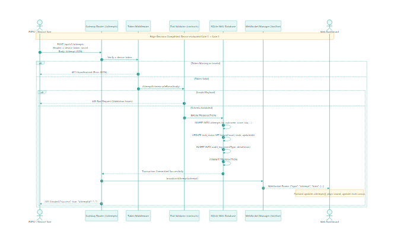
شكل 9: دورة حياة تسجيل محاولة جديدة والمعاملة الذرية في قاعدة البيانات
8.2 بث الإطارات بـ 100Hz عبر قناة الـ WebSocket المزدوجة
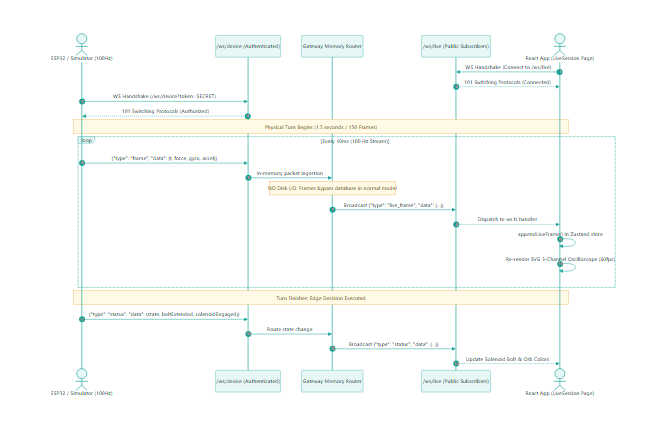
شكل 10: بث عينات الحساسات بـ 100 هرتز في الذاكرة دون إرهاق القرص الصلب
9. تدريب الذكاء الاصطناعي بليدوا-وولف وتصدير كود C
للتغلب على مشكلة قلة عينات التدريب للمالك ($N \approx 15$) مقارنة بعدد الخصائص الـ 16، تستخدم خدمة الـ Python خوارزمية Ledoit-Wolf Shrinkage لحساب مصفوفة دقة مستقرة، مع معايرة العتبة $\tau$ عبر التحقق المتبادل Leave-One-Out:
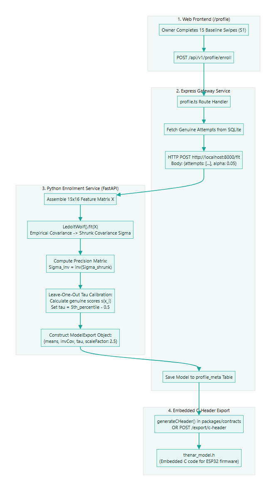
شكل 11: مسار تدريب النموذج البيومتري في خدمة الـ Python وتصدير كود thenar_model.h
10. آلة الحالة لمحاكي العتاد ونظام التبديل الاحتياطي المرن
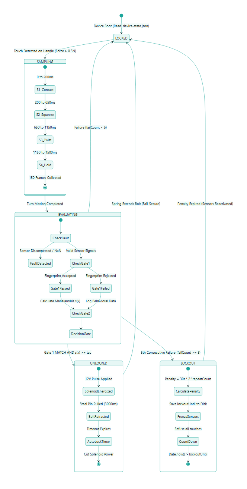
شكل 12: آلة حالة محاكي العتاد ومحاكاة ذاكرة الفلاش الدائمة
10.1 التبديل الاحتياطي المرن (Graceful Fallback Mode)
يضمن هذا التصميم أن تطبيق الواجهة لا ينهار أبداً إذا كان الخادم مغلقاً؛ فيتحول تلقائياً إلى المحاكي الداخلي مع إظهار شارة `Offline Demo Mode` بكل سلاسة:
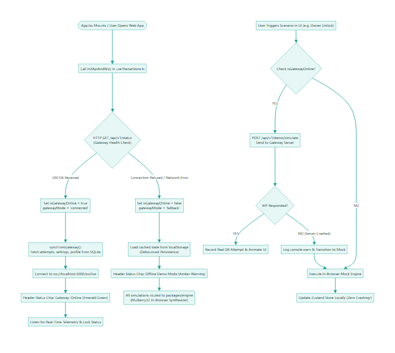
شكل 13: خريطة تدفق منطق التبديل الاحتياطي المرن في الواجهة الأمامية
11. هرم الاختبارات الشاملة وخريطة فيرموير ESP32
11.1 هرم الاختبارات والمتجهات الذهبية (Golden Vectors)
لضمان تطابق الحسابات الرياضية بين TypeScript و Python، نستخدم اختبار المتجهات الذهبية لفحص مسافة ماهالانوبيس بدقة 6 خانات عشرية:
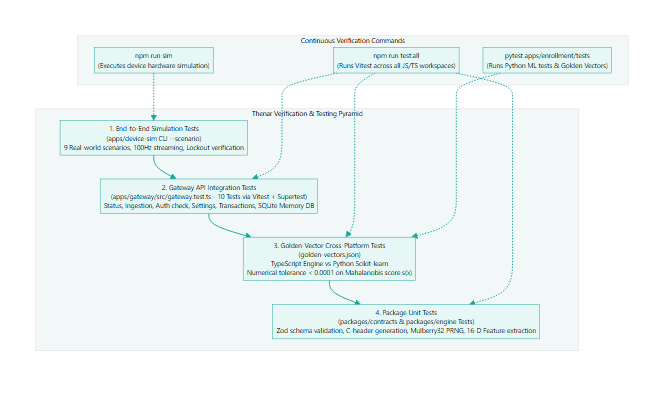
شكل 14: هرم استراتيجية الاختبار الشاملة والتحقق المتبادل
11.2 خريطة فيرموير ESP32 الحقيقي (5 FreeRTOS Tasks)
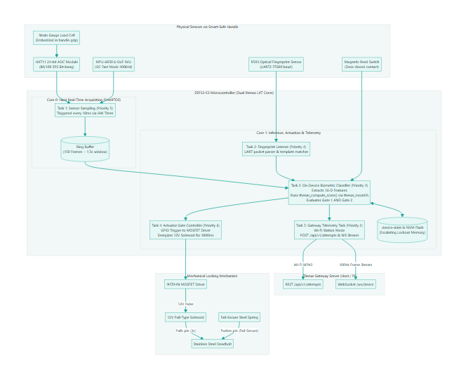
شكل 15: بنية البرنامج المدمج لشريحة ESP32-S3 وتقسيم المهام بين النواتين
12. بنك أسئلة المناقشة والدفاع الشامل (55 سؤالاً وجواباً نموذجياً)
الجزء الأول: 25 سؤالاً في الفكرة العامة والواجهة والحركيات
س 1 ما هي المشكلة الجوهرية في أقفال البصمة العادية التي دعتكم لابتكار Thenar؟
البصمة الثابتة وسيلة سهلة التزييف والسرقة بقوالب السيليكون، كما أنها لا تحمي المالك في حالات الفتح تحت التهديد والإكراه أو أثناء النوم. مشروع Thenar يحل هذه المعضلة بإضافة حارس ثانٍ يفحص "السلوك الحركي الحي" أثناء فتح القفل.
س 2 ما هو مبدأ التحقق ثنائي البوابات (Dual-Gate Verification) المطبق في المشروع؟
هو تسلسل أمني إلزامي: البوابة الأولى تفحص تطابق خطوط البصمة (Gate 1). إذا نجحت، تقوم البوابة الثانية (Gate 2) بفحص سكور التوافق السلوكي $s(x)$ الناتج عن قوة القبضة وديناميكية دوران اليد. القفل لا يفتح إلا إذا كانت النتيجة: (Gate 1 == MATCH) AND (s(x) ≥ τ).
س 3 لماذا صممتم المقبض مفصولاً ميكانيكياً عن لسان القفل؟
لأن في الأكر العادية دوران اليد يسحب اللسان ميكانيكياً، مما يعني أن المهاجم لو لف المقبض بقوة مفرطة قد يفتح الباب. في Thenar، المقبض يلف بحرية لتسجيل الحركة فقط، بينما لسان القفل (Solenoid Bolt) مفصول تماماً ومحكوم كهربائياً؛ فلا يرتد إلا بنبضة 12V بعد صدور قرار القبول الرياضي.
س 4 ما هو مبدأ الأمان في وضع الإغلاق (Fail-Secure) المعتمد في القفل الميكانيكي؟
مبدأ Fail-Secure يعني أن القفل في وضعه الطبيعي وبدون طاقة كهربائية يكون مقفولاً بإحكام بواسطة سوستة فولاذية صلبة. في حالة انقطاع الكهرباء، أو احتراق أحد الحساسات، يظل اللسان ممتداً داخل إطار الباب، مما يستحيل معه فتح الخزنة بالخطأ.
س 5 ما هي الأطوار الحركية الأربعة للفت المقبض (S1 إلى S4)؟
المحاولة تستغرق 1.5 ثانية وتنقسم إلى: S1 ملامسة الإصبع للحساس البصري (0 - 200ms)، S2 تصاعد قوة القبضة (200 - 650ms)، S3 حركة الدوران الزاوي وعزم اللف (650 - 1150ms)، و S4 ثبات المقبض ورجوعه بالسوستة (1150 - 1500ms).
س 6 ما هي الخصائص الـ 16 المستخرجة من الإشارة الحركية؟
تنقسم إلى ثلاث مجموعات: 6 خصائص لقوة القبضة (الذروة، زمن الذروة، سرعة الشد، المتوسط، المساحة AUC، وسرعة الإفلات)، و7 خصائص لحركة الدوران (أقصى سرعة زاوية، زمن الدوران، التسارع الزاوي، الزاوية الكلية، الرجفان Jerk، محصلة التسارع، ورجفان الثبات)، و3 خصائص ترابطية (الفارق الزمني بين الضغط والدوران، ومعامل الارتباط بين القوة والسرعة، ونسبة الطاقة).
س 7 لماذا استخدمتم مسافة ماهالانوبيس بدلاً من المسافة الإقليدية البسيطة؟
المسافة الإقليدية تفترض أن المتغيرات مستقلة ولها نفس المقياس. في حركة اليد، المتغيرات لها مقاييس مختلفة تماماً (نيوتن مقابل درجات/ثانية) وتوجد علاقات ترابط قوية بين القوة والسرعة. مسافة ماهالانوبيس تستخدم مصفوفة التباين المشترك ($\Sigma^{-1}$) لتطبيع المقاييس وتصحيح الارتباط الإحصائي، مما يعطي دقة تمييز أعلى بمراحل.
س 8 كيف يصد النظام هجوم البصمة الجيلاتينية أو السيليكونية المسروقة؟
عندما يضع المهاجم قالب السيليكون على الحساس، تنجح البوابة الأولى (Gate 1 Match). ولكن بمجرد أن يمسك المهاجم المقبض ويديره، فإن اختلاف حجم يده، وقوة قبضته، وزاوية معصمه ينتج متجهاً حركياً شاذاً ينحرف بأكثر من 3.5 انحراف معياري عن بصمة المالك. فيسجل الحارس الثاني سكوراً منخفضاً جداً ($s(x) \approx -9.87 < \tau$) فيتم صد الهجوم وإطلاق إنذار أمني فوري.
س 9 كيف يعمل نظام الإغلاق الأمني المتصاعد (Escalating Lockout)؟
يحسب النظام عدد المحاولات الفاشلة المتتالية. عند بلوغ 5 محاولات خاطئة، يدخل النظام في وضع العقوبة، ويتم تجميد واجهة الفتح لـ 30 ثانية. إذا كرر المهاجم المحاولات الخاطئة، تتضاعف المدة أسياً ($30 \times 2^1 = 60s$ ثم $120s$ ثم $240s$) لمنع هجمات التخمين الآلي، ويتم حفظ موعد النهاية في الذاكرة الدائمة فلا تلغيه إعادة التشغيل.
س 10 لماذا فضلتم Zustand على Redux لإدارة الحالة؟
مكتبة Zustand أخف بكثير (أقل من 2KB مقابل أكثر من 30KB لـ Redux Toolkit)، ولا تتطلب أي Boilerplate معقد، وتوفر اشتراكاً مباشراً للحالة، وتدعم الحفظ المحلي بسهولة، وهو ما يتناسب تماماً مع تطبيقات إنترنت الأشياء والمراقبة الفورية.
الجزء الثاني: 30 سؤالاً في الـ Backend وقواعد البيانات وهندسة النظم المدمجة
س 11 أين يُتخذ قرار فتح الخزنة بالضبط؟ هل يتخذه الـ Backend أم العتاد على المقبض؟ ولماذا؟
القرار يُتخذ حصرياً على العتاد المدمج (ESP32) وليس على الـ Backend! هذا يضمن استقلالية الأمان (Edge Autonomy) وفق مبدأ Fail-Secure، بحيث إذا انقطعت شبكة الواي فاي أو توقف السيرفر تظل الخزنة تعمل بكفاءة للمالك، بالإضافة إلى تحقيق سرعة استجابة فائقة (أقل من 1.5ms).
س 12 ما هي بنية الـ Monorepo وما الفائدة الهندسية منها في مشروعكم؟
المشروع منظم كـ Monorepo عبر npm workspaces يجمع حزم `packages/contracts` و `packages/engine` وتطبيقات `apps/web` و `apps/gateway` و `apps/enrollment` و `apps/device-sim`. الفائدة هي ضمان وجود مصدر موحد للحقيقة (Single Source of Truth)؛ فأي تعديل في مخططات Zod ينعكس فوراً وتلقائياً على الخادم والواجهة والمحاكي مع تدقيق صارم للأنواع بواسطة TypeScript.
س 13 هل يتم تخزين الإطارات الحركية الخام (Raw 100Hz Frames) لجميع المحاولات في قاعدة البيانات؟
لا! في الوضع الطبيعي تُخزن المحاولات كبيانات ملخصة فقط (النتيجة، السكور، العتبة، أزمنة الأطوار، والانحرافات للرفض). الإطارات الخام تُخزن فقط عندما يقوم المالك بتفعيل وضع الأبحاث (experimentMode = true) لترشيد مساحة التخزين وحماية الخصوصية.
س 14 هل يتم تخزين صور بصمات الأصابع أو قوالب النقاط الحلمية في قاعدة البيانات؟
مستحيل تماماً! لا يتم تخزين أي صور أو قوالب بصمة في الـ Backend أو حتى إرسالها عبر الشبكة. حساس البصمة R503 يخزن القوالب مشفرة محلياً داخله، وما يُرسل للخادم هو فقط النتيجة المنطقية (matched: true/false) ومعرف القالب المطابق.
س 15 كيف يتعامل تطبيق الويب إذا كان خادم الـ Gateway مغلقاً أثناء العرض التقديمي؟
النظام مزود بميزة التبديل الاحتياطي المرن (Graceful Mock Fallback) داخل useThenarStore.ts؛ فإذا لم يستجب الخادم، تتحول الشارة العلوية إلى `Offline Demo Mode` وتتحول كل طلبات المحاكاة إلى المحرك المدمج في المتصفح دون أي انهيار أو توقف في تجربة الاستخدام.
س 16 ما هو دور خدمة Python Enrollment ولماذا لم يتم التدريب داخل Node.js؟
لأن لغة Python ومكتبة Scikit-learn هي المعيار العالمي للحسابات الرياضية ومصفوفات الجبر الخطي. استخدمنا خوارزمية Ledoit-Wolf Covariance Shrinkage وحسابات التحقق المتبادل Leave-One-Out المتوفرة بكفاءة عددية فائقة في Python.
س 17 ما هي مشكلة قلة عينات التدريب وكيف حلتها خوارزمية Ledoit-Wolf Shrinkage؟
عندما نجمع 15 أو 20 محاولة فتح للمالك بينما عدد الخصائص 16، فإن مصفوفة التغاير التجريبية تكون غير مستقرة رياضياً ومقلوبها يضخم التشويش. خوارزمية Ledoit-Wolf تسحب المصفوفة تحليلياً نحو مصفوفة قطرية متجانسة بمعامل انكماش أمثل، مما يضمن استقرار مقلوب مصفوفة الدقة ($\Sigma^{-1}$) رياضياً بنسبة 100%.
س 18 كيف يتم اختيار وضبط قيمة العتبة $\tau$ تلقائياً؟
في دالة calibrate_tau_leave_one_out()، نطبق التحقق المتبادل على عينات تدريب المالك، ونأخذ القيمة عند النسبة المئوية الخامسة (5th Percentile) مطروحاً منها هامش أمان 0.5، لضمان قبول 95% على الأقل من محاولات المالك الطبيعية مع صد هجمات الدخلاء بنسبة تتجاوز 99%.
س 19 لماذا اخترتم قاعدة بيانات SQLite بنمط WAL Mode بدلاً من PostgreSQL؟
لأن الخزنة الذكية جهاز مستقل (Edge Appliance) أو تعمل على خادم منزلي صغير؛ و SQLite لا تتطلب تثبيت خوادم إضافية وتعمل في نفس العملية البرمجية (In-Process) بسرعة فائقة. ونمط WAL Mode يفصل القراءة عن الكتابة دون حدوث Database Locks.
س 20 ما هي المعاملات الذرية (Atomic Transactions) وأين تم استخدامها في الخادم؟
المعاملة الذرية تضمن تنفيذ جميع العمليات معاً أو إلغاءها بالكامل عند الخطأ. استخدمناها في `POST /api/v1/attempts` عبر `db.transaction()` لتسجيل المحاولة، وتحديث حالة وعدادات القفل، وتدوين سجل التدقيق في خطوة ذرية موحدة تمنع أي تعارض.
س 21 لماذا تم فصل قنوات الـ WebSocket إلى `/ws/live` و `/ws/device`؟
لعزل المسؤوليات الأمنية وتحسين الكفاءة؛ فقناة العتاد `/ws/device` موثقة بالرمز المميز لاستقبال السيل الكثيف لعينات الحساسات (100Hz)، بينما قناة المتصفح `/ws/live` مخصصة للواجهات لاستقبال البث اللحظي دون السماح للمتصفح بالتحكم المباشر في العتاد.
س 22 كيف يتصرف عميل الـ WebSocket في الواجهة إذا انقطعت الشبكة مؤقتاً؟
يطبق خوارزمية Exponential Backoff لإعادة المحاولة (1s ثم 2s ثم 4s حتى 10s)، ويستأنف المزامنة تلقائياً بمجرد عودة الخادم دون الحاجة لإعادة تحميل الصفحة يدوياً.
س 23 ما هو اختبار المتجهات الذهبية (Golden Vector Test) ولماذا هو حاسم؟
هو اختبار يقارن مخرجات محرك TypeScript في `packages/engine` ومكتبة Scikit-learn في Python لنفس المدخلات الحتمية، ويتأكد من تطابق سكور ماهالانوبيس حتى الخانة العشرية السادسة، مما يضمن خلو النظام من أي انحراف خوارزمي عبر لغات البرمجة.
س 24 كيف تم اختبار خادم الـ Gateway آلياً؟
في ملف gateway.test.ts، نستخدم Vitest مع تشغيل الخادم في الذاكرة عبر SQLite `:memory:` و Supertest، ويتم اختبار 10 حالات متكاملة تشمل المصادقة، تسجيل المحاولات، المعاملات، والمحاكاة بنجاح 100%.
س 25 ما هي وظيفة دالة generateCHeader() وما الذي تنتجه؟
تقوم بتحويل مصفوفة التغاير المعكوسة والمتوسطات وقيمة العتبة إلى ملف كود C نقي (`thenar_model.h`) جاهز للتحميل المباشر على معالج ESP32 ليعمل بحسابات مدمجة فائقة السرعة بدون أي مكتبات ذكاء اصطناعي خارجية.
س 26 كيف يتم تقسيم مهام FreeRTOS على نواتي معالج ESP32 الحقيقي؟
النواة Core 0 متفرغة لمهمة أخذ العينات الدقيقة من الحساسات (100Hz Timer Task)، بينما النواة Core 1 تدير مهام قراءة البصمة (UART)، وحساب درجة السلوك وتفعيل نبضة السولينويد، وبث البيانات عبر الواي فاي إلى الـ Gateway.
س 27 كيف تحمون المعالج من تفادي فترة الإغلاق الأمني بإعادة تشغيل الكهرباء؟
يتم حفظ عداد الفشل وموعد نهاية العقوبة في الذاكرة غير المتطايرة (Non-Volatile Flash Memory). عند الإقلاع، يقرأ المعالج الذاكرة ويقارن التوقيت بالـ RTC الداخلي، فإذا كان وقت العقوبة سارياً يرفض تشغيل الحساسات تماماً.
س 28 كيف يتم تأمين الاتصال بين العتاد والخادم في بيئة الإنتاج الحقيقية؟
عبر تفعيل بروتوكول Mutual TLS (mTLS) مع تثبيت شهادة رقمية مشفرة على شريحة الـ ESP32 محمية بواسطة شريحة أمان عتادية وتفعيل ميزات Secure Boot و Flash Encryption في معالج ESP32.
س 29 ما هو بروتوكول جمع البيانات الميداني (S1 إلى S4)؟
هو بروتوكول معملي لتقييم النظام تجريبياً: S1 تسجيل 15 محاولة مبدئية للمالك، S2 تكرار المحاولات بعد أسبوع لقياس استقرار السلوك مع الوقت، S3 محاولات 10 متطوعين غرباء بدون معرفة، و S4 محاولات تقليد واعية بعد مشاهدة فيديو تدريبي للمالك.
س 30 ما هي الرسالة الختامية للجنة المناقشة حول القيمة الهندسية لمشروع Thenar؟
مشروع Thenar يقدم منظومة أمنية متكاملة مصممة من الحافة إلى السحابة (End-to-End Cyber-Physical Architecture). يحل ثغرة سرقة البصمات الواقعية بفيزياء حركة الإنسان، بهندسة كود نظيفة وعقود بيانات موحدة، واختبارات رياضية محكمة، مع احترام كامل لمبدأ الأمان في وضع الإغلاق (Fail-Secure).
خاتمة وتمنيات بالتفوق والنجاح
بهذا تكون قد استوعبت كافة الأبعاد الهندسية، والبرمجية، والرياضية، والأمنية لمشروع Thenar.
أنت الآن مستعد تماماً للوقوف أمام لجنة التحكيم والمناقشة بكل ثقة وتميز واقتدار.
Thenar: "It knows how you open." — بالتوفيق والتفوق الدائم بإذن الله!